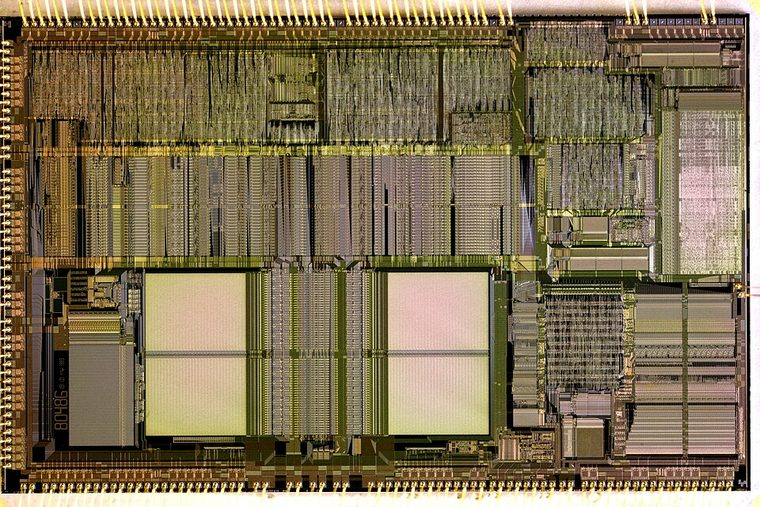

[ 486 GENERATION // IDENTIFIED COMPONENT ]
Intel 80486DX-33
The 33 MHz Intel 80486DX combines an integer core, on-chip cache, and floating-point unit in a single desktop processor package.

MODEL IDENTIFICATION: Intel 80486DX-33. Read the full top marking/OPN, speed grade, package, and stepping from the physical part; do not transfer specifications across similarly named revisions.
Recorded specifications
| Cataloged part | Intel 80486DX-33 |
|---|---|
| Era / family | Intel 486DX generation, early 1990s; 33 MHz clock grade. |
| Key specifications | 33 MHz clock; 32-bit x86; integrated floating-point unit; 8 KB unified on-chip cache; 32-bit external bus; 5 V operation for the original 486DX-33; 168-pin PGA package. |
| Interface / fit | Requires an 80486DX-compatible 168-pin board, correct 5 V supply, and 33 MHz clock support. Board voltage/regulator and BIOS support must be confirmed rather than inferred from the socket alone. |
| Variants / identification | DX2 models use a clock multiplier and are different clock/bus configurations; later 3.3 V 486 parts are not interchangeable with 5 V parts without board support. |
Compatibility and service notes
- Requires an 80486DX-compatible 168-pin board, correct 5 V supply, and 33 MHz clock support. Board voltage/regulator and BIOS support must be confirmed rather than inferred from the socket alone.
- DX2 models use a clock multiplier and are different clock/bus configurations; later 3.3 V 486 parts are not interchangeable with 5 V parts without board support.
- Check for bent PGA pins, package corrosion, and correct pin-1 orientation. Avoid powering a 5 V-only part in a board configured for a later low-voltage 486.
- Before installation, compare the exact CPU marking with the motherboard maker’s support list, board revision, BIOS minimum, package/socket, power requirements, and memory type. Do not force a package into a socket.
Service & archival record
Check for bent PGA pins, package corrosion, and correct pin-1 orientation. Avoid powering a 5 V-only part in a board configured for a later low-voltage 486.
For a collection record, photograph both sides, retain the full model/OPN and date/lot codes, describe package and contact condition, and record the tested motherboard revision, firmware, cooling, memory, and measured operating conditions. Separate measured observations from published limits.
Sources & further reading
- Intel 486 DX microprocessor data sheet (model-family electrical and package reference)Model-specific manufacturer, technical-document, or product-history reference; consult the exact device marking and board revision.
- Intel 486 processor documentation archive — DX-33 documentation groupModel-specific manufacturer, technical-document, or product-history reference; consult the exact device marking and board revision.
- Intel processor history and 486-era context — Intel MuseumModel-specific manufacturer, technical-document, or product-history reference; consult the exact device marking and board revision.
Third-party mirrors or historical document indexes may host manufacturer-authored manuals. Check document revision and exact model marking; board compatibility remains specific to its maker and firmware.